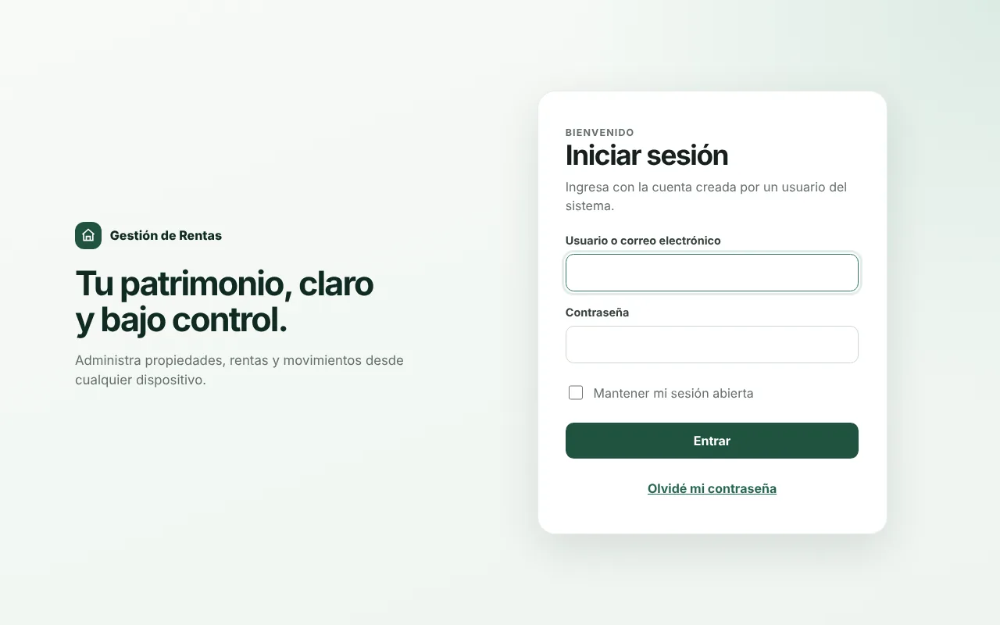

Rentas Aurora
Sistema de administración de rentas · SaaS multi-cliente
Cada cliente administra sus propiedades, inquilinos, contratos y cobros desde el celular. Los trabajadores registran pagos que requieren aprobación, y un panel comercial separado gestiona suscripciones sin ver los expedientes privados de cada cliente.
- Datos aislados por organización con autorización en servidor
- Pagos parciales, anulaciones inmutables y bitácora de auditoría
- Exportaciones ZIP con CSV y avisos de vencimientos y atrasos
La demo trae datos de ejemplo y guarda tus cambios solo en tu navegador.